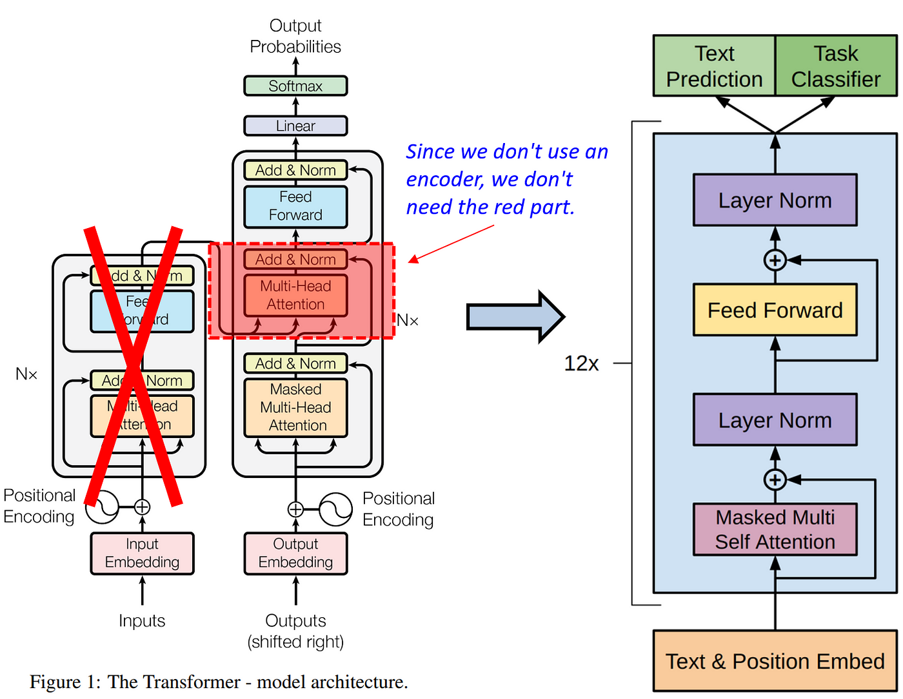
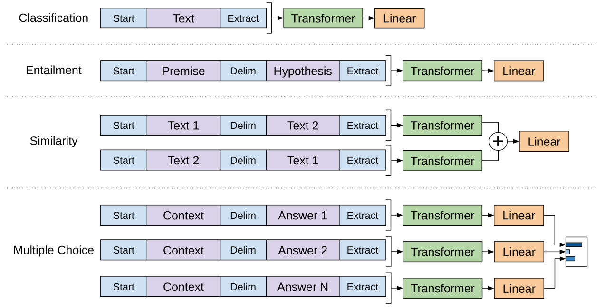

论文笔记 - Improving Language Understanding by Generative Pre-Training
1. Information
Title: Improving Language Understanding by
Generative Pre-Training
Link: GPT
V1 Paper
Date: 2018
2. Summary
- 本文提出了一种基于 Transformer 解码器的生成式语言模型，该模型通过在大规模无监督数据集上进行预训练，从而显著提高了下游任务（如问答、文本分类等）的性能。
- 通过预训练和微调的框架，GPT 模型减少了对大规模标注数据的依赖。
3. Background
研究解决了特定自然语言任务的标记数据稀缺问题，而大量未标记文本语料库却很丰富。它建立在利用未标记数据可以提供替代收集更多注释的方法，并提高 NLP 任务性能的理念上。其重要性在于减少对监督学习的依赖，并提高语言理解的技术水平。
4. Research Objective
研究目标是学习一个能够很好地转移到广泛任务的通用表示。作者旨在证明，一个在未标记文本上预训练的模型在特定自然语言理解任务上进行微调后，可以显著提高性能。
5. Method

5.1 Self-supervised pre-training
GPT 采用了自回归模型，这意味着在每次预测时，模型仅依赖于左侧的上下文信息（单向注意力）。与双向的 Transformer 模型（例如 BERT ）不同，GPT 的训练过程仅基于从左到右的文本顺序。
GPT 使用的是基于 Transformer 解码器的结构，而非完整的 Transformer。每个Transformer 块包括多个注意力头和全连接层，层与层之间通过残差连接和层归一化进行处理。与原始的 Transformer 解码器相比，GPT 省略了交叉注意力（Cross-attention）部分。
优化目标是基于之前窗口内的词，最大化预测下一个词的概率，公式如下： \[ L_1(\mathcal{U})=\sum_i \log P\left(u_i \mid u_{i-k}, \ldots, u_{i-1} ; \Theta\right) \]
5.2 Supervised fine-tuning
在预训练的模型后，添加了一个线性层，对最后一个 Token（\(x^m\)） 的输出（\(h_l^m\)）映射到任务特定的输出空间。通过这种方式，模型能够针对特定任务进行微调，以适应不同的下游任务需求。 \[ P\left(y \mid x^1, \ldots, x^m\right)=\operatorname{softmax}\left(h_l^m W_y\right) \] 优化目标是最大化下述概率： \[ L_2(\mathcal{C})=\sum_{(x, y)} \log P\left(y \mid x^1, \ldots, x^m\right) \] 其中，\((x, y)\) 代表训练数据中的输入输出对。
此外综合考虑上述两个优化目标，可以 (a) 增强模型泛化性和 (b) 加速模型收敛，公式如下： \[ L_3(\mathcal{C})=L_2(\mathcal{C})+\lambda * L_1(\mathcal{C}) \]
5.3 基于任务的输入转换
在微调阶段，为了使预训练模型能够处理各种不同的下游任务，需要对输入数据进行特定的转换，以适应模型的输入要求。这些转换允许模型将结构化输入（例如，问答任务中的文档、问题和答案）转换为连续的标记序列，以便模型可以处理。这些输入转换使得模型能够在不同任务之间进行有效的迁移学习，而无需对模型架构进行大量修改。具体的转换如下：

6. Conclusion
生成预训练后进行判别式微调是实现强大自然语言理解的有效框架。该方法在预训练期间获得了世界知识和处理长距离依赖关系的能力，这些能力成功地转移到解决判别式任务上，提高了多个数据集上的技术水平。